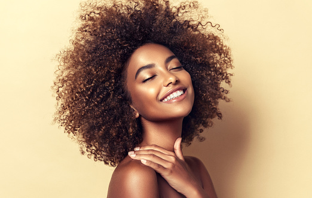

WHAT WE BELIEVE IN
Make-up artistry is all about using cosmetics to enhance one's natural beauty and create different looks for different occasions. A skilled make-up artist can use various techniques and products to highlight facial features and correct imperfections. When it comes to enhancing one's face with make-up, it's important to start with a clean, moisturized canvas. Using a primer can help create a smooth base for foundation, which should be matched to your skin tone.
Highlighting and contouring can add dimension and shape to the face, while blush can add a pop of color. Filling in eyebrows, applying mascara, and choosing the right lip color can also make a big difference in the overall look. It's important to experiment and find what works best for you.